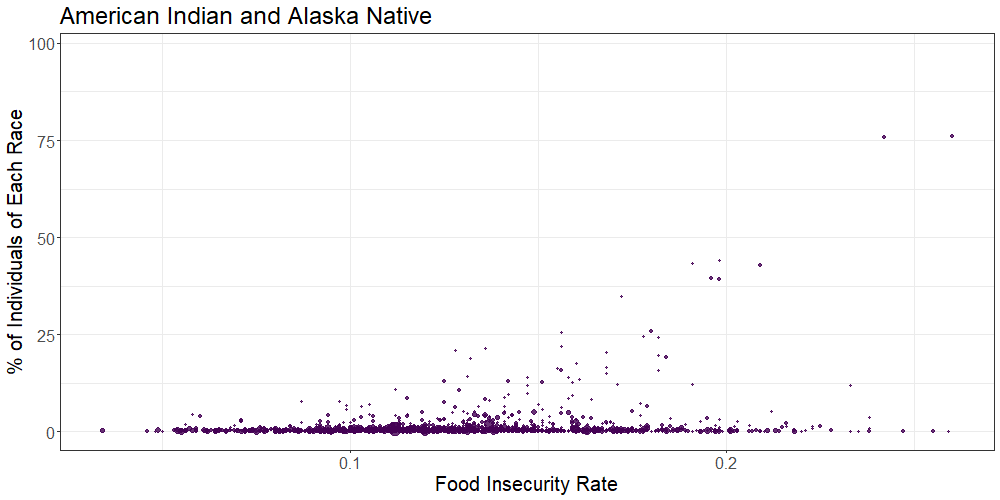
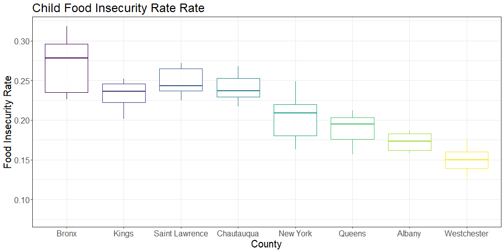
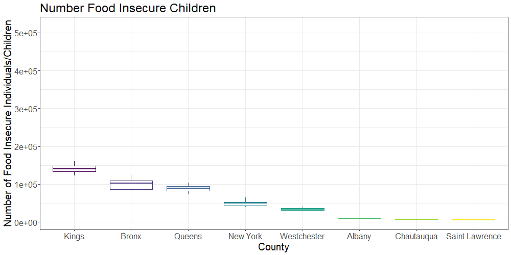
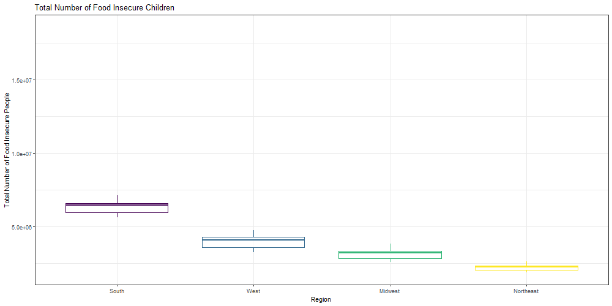

library(tidyverse)
library(gganimate)
library(kableExtra)
library(plotly)
knitr::opts_chunk$set(
echo = TRUE,
warning = FALSE,
fig.width = 8,
fig.height = 6,
out.width = "90%"
)
theme_set(theme_minimal() + theme(legend.position = "bottom"))
options(
ggplot2.continuous.colour = "viridis",
ggplot2.continuous.fill = "viridis"
)
scale_colour_discrete = scale_colour_viridis_d
scale_fill_discrete = scale_fill_viridis_dFood insecurity, the state of being without reliable access to a sufficient quantity of affordable, nutritious food, is a leading health and nutrition issue in the United States. In 2017 an estimated 40 million Americans (12.5 percent) were food insecure.
Food insecurity is associated with numerous adverse health outcomes, including mental health problems, diabetes, hypertension, asthma and poorer general health. As a result of the COVID-19 pandemic, millions of Americans have lost stable employment; early estimates suggest more than 50 million people, including 17 million children, may be experiencing food insecurity in 2020.
Existing research has shown food insecurity to disproportionately impact non-White populations, as well as immigrants, those lacking health insurance, and those with lower educational attainment.
Figure 1. National food insecurity prevalence by race and ethnicity
Image from Center on Budget and Policy Priorities
As a result of the increasing prevalence of food insecurity during the COVID-19 pandemic, we are collectively interested in investigating the prevalence of food insecurity on the county-level and its association with select social determinants of health.
Initially, our overarching question was, what does the food disparity across the United States look like on national, regional and county-levels? After investigating the variables in our datasets, we developed more specific research questions and goals, including:
We utilized Feeding America’s Map the Meal Gap data to quantify food insecurity on a county and regional level. Map the Meal Gap is an annual study conducted by Feeding America to characterize how food insecurity and food costs vary at the local level. Understanding these variations may allow communities to develop targeted strategies to reach people struggling with hunger. For this project, we used Map the Meal Gap annual study reports from years 2011 to 2019, where each report is based on US Census data from the preceding two years. Thus, the study data range from years 2009 - 2017.
Each report presents estimates of 15 food insecurity indicators generated using predictive modeling. Data were presented on the state, county, and congressional district-level. For this project, we used county-level data. We chose to specifically focus on 8 of those 15 indicators for our analysis.
8 Food Insecurity Indicators:
As these data were contained on multiple Excel files, we used the map function to import the data across files. Since column naming was not always consistent across files, the coalesce function was used to combine data from columns representing the same variables. We then generated a unique county-state field, and re-valued select county entries using stringr to be consistent with the US Healthcare.gov Geocodes dataset county naming convention (https://data.healthcare.gov/resource/geocodes-usa-with-counties.json).
#import libraries
library(tidyverse)
library(readxl)
library(rvest)
library(httr)
library(RSelenium)
library(stringr)#import Map the Meal Gap County data using map function
path_1_df =
tibble(
path = list.files("food_insecurity_county1_data"))
path_1_df = path_1_df %>%
mutate(
path = str_c("food_insecurity_county1_data/", path),
data = map(.x = path, ~read_excel(.x))
)
path_2_df =
tibble(
path = list.files("food_insecurity_county2_data"))
path_2_df = path_2_df %>%
mutate(
path = str_c("food_insecurity_county2_data/", path),
data = map(.x = path, ~read_excel(.x, sheet = 2))
)
map_the_meal_gap_df = bind_rows(path_1_df, path_2_df)#Fix the variable types on datasets that do not match the other datasets.
map_the_meal_gap_df[[2]][[1]]$FIPS = as.numeric(map_the_meal_gap_df[[2]][[1]]$FIPS)
map_the_meal_gap_df[[2]][[2]]$`% FI Btwn Thresholds` = as.numeric(map_the_meal_gap_df[[2]][[2]]$`% FI Btwn Thresholds`)
map_the_meal_gap_df[[2]][[1]]$`Cost Per Meal` = as.numeric(map_the_meal_gap_df[[2]][[1]]$`Cost Per Meal`)#Unnest the data and clean names.
map_the_meal_gap_df = map_the_meal_gap_df %>%
unnest(data) %>%
janitor::clean_names() #Fix the county names to match location data and coalesce the same variables into one column. Create an additional county_state variable to match data to location data. Select only the new columns from coalescing.
map_the_meal_gap_df = map_the_meal_gap_df %>%
mutate(year = str_extract(path, "_[0-9]{4}"),
year = str_remove(year, "_"),
state = coalesce(state_name, state),
county_code = tolower(county_code),
county_state = tolower(county_state),
county = coalesce(county_code, county_state),
county = str_replace(county, ",.*", ""),
county = str_replace(county, "\\scounty",""),
county = str_replace(county, "\\sparish",""),
county = str_replace(county, "\\sborough", ""),
county = str_replace(county, "\\scensus area", ""),
county = str_replace(county, "\\smunicipality", ""),
county = str_replace(county, "covington city", "covington"),
county = str_replace(county, "do¤a ana", "doña ana"),
county = str_replace(county, "dona ana", "doña ana"),
county = str_replace(county, "du page", "dupage"),
county = str_replace(county, "^st\\s|^st\\.", "saint "),
fi_rate = coalesce(fi_rate, x2010_food_insecurity_rate, x2011_food_insecurity_rate, x2012_food_insecurity_rate, x2013_food_insecurity_rate, x2014_food_insecurity_rate, x2015_food_insecurity_rate, x2016_food_insecurity_rate, x2017_food_insecurity_rate),
number_food_insecure_individuals = coalesce(number_food_insecure_individuals, number_of_food_insecure_persons_in_2010, number_of_food_insecure_persons_in_2011, number_of_food_insecure_persons_in_2012, number_of_food_insecure_persons_in_2013, number_of_food_insecure_persons_in_2014, number_of_food_insecure_persons_in_2015, number_of_food_insecure_persons_in_2016, number_of_food_insecure_persons_in_2017),
child_fi_rate = coalesce(child_fi_rate, x2010_child_food_insecurity_rate, x2011_child_food_insecurity_rate, x2012_child_food_insecurity_rate, as.numeric(x2013_child_food_insecurity_rate), x2014_child_food_insecurity_rate, x2015_child_food_insecurity_rate, x2016_child_food_insecurity_rate, x2017_child_food_insecurity_rate),
number_food_insecure_children = coalesce(number_food_insecure_children, number_of_food_insecure_children_in_2010, number_of_food_insecure_children_in_2011, number_of_food_insecure_children_in_2012, number_of_food_insecure_children_in_2013, number_of_food_insecure_children_in_2014, number_of_food_insecure_children_in_2015, number_of_food_insecure_children_in_2016, number_of_food_insecure_children_in_2017),
cost_per_meal =
coalesce(cost_per_meal, x2010_cost_per_meal, x2012_cost_per_meal, x2013_cost_per_meal, x2014_cost_per_meal, x2015_cost_per_meal, x2016_cost_per_meal, x2017_cost_per_meal),
weighted_annual_dollars = na_if(weighted_annual_dollars, "n/a"),
weighted_annual_food_budget_shortfall = coalesce(weighted_annual_food_budget_shortfall, as.numeric(weighted_annual_dollars), x2010_weighted_annual_food_budget_shortfall, x2012_weighted_annual_food_budget_shortfall, x2013_weighted_annual_food_budget_shortfall, x2014_weighted_annual_food_budget_shortfall, x2015_weighted_annual_food_budget_shortfall, x2016_weighted_annual_food_budget_shortfall, x2017_weighted_annual_food_budget_shortfall),
percent_of_children_in_fi_hh_with_hh_incomes_below_185_percent_fpl = coalesce(percent_food_insecure_children_in_hh_w_hh_incomes_below_185_fpl,percent_of_children_in_fi_hh_with_hh_incomes_at_or_below_185_percent_fpl, percent_food_insecure_children_in_hh_w_hh_incomes_below_185_fpl_in_2012, as.numeric(percent_food_insecure_children_in_hh_w_hh_incomes_below_185_fpl_in_2013), percent_food_insecure_children_in_hh_w_hh_incomes_below_185_fpl_in_2014, percent_food_insecure_children_in_hh_w_hh_incomes_below_185_fpl_in_2015, percent_food_insecure_children_in_hh_w_hh_incomes_below_185_fpl_in_2016, percent_food_insecure_children_in_hh_w_hh_incomes_below_185_fpl_in_2017),
percent_of_children_in_fi_hh_with_hh_incomes_above_185_percent_fpl =
coalesce(percent_of_children_in_fi_hh_with_hh_incomes_above_185_percent_fpl, percent_of_food_insecure_children_in_hh_w_hh_incomes_above_185_fpl, percent_food_insecure_children_in_hh_w_hh_incomes_above_185_fpl_in_2012, as.numeric(percent_food_insecure_children_in_hh_w_hh_incomes_above_185_fpl_in_2013), percent_food_insecure_children_in_hh_w_hh_incomes_above_185_fpl_in_2014, percent_food_insecure_children_in_hh_w_hh_incomes_above_185_fpl_in_2015, percent_food_insecure_children_in_hh_w_hh_incomes_above_185_fpl_in_2016, percent_food_insecure_children_in_hh_w_hh_incomes_above_185_fpl_in_2017),
) %>%
unite("county_state", c("county", "state"), sep = "_", remove = FALSE) %>%
mutate(county_state = str_replace(county_state, "bristol_VA", "bristol city_VA"),
county_state = str_replace(county_state, "dekalb_IN", "de kalb_IN"),
county_state = str_replace(county_state, "dekalb_TN", "de kalb_TN"),
county_state = str_replace(county_state, "dewitt_IL", "de witt_IL"),
county_state = str_replace(county_state, "dewitt_TX", "de witt_TX"),
county_state = str_replace(county_state, "du page_IL", "dupage_IL"),
county_state = str_replace(county_state, "juneau city and_AK", "city and of juneau_AK"),
county_state = str_replace(county_state, "laporte_IN", "la porte_IN"),
county_state = str_replace(county_state, "lasalle_IL", "la salle_IL"),
county_state = str_replace(county_state, "lasalle_LA", "la salle_LA"),
county_state = str_replace(county_state, "matanuska susitna_AK", "matanuska-susitna_AK"),
county_state = str_replace(county_state, "o'brien_IA", "obrien_IA"),
county_state = str_replace(county_state, "prince georges_MD", "prince george's_MD"),
county_state = str_replace(county_state, "queen annes_MD", "queen anne's_MD"),
county_state = str_replace(county_state, "radford_VA", "radford city_VA"),
county_state = str_replace(county_state, "saint ", "saint "),
county_state = str_replace(county_state, "saint marys_MD", "saint mary's_MD"),
county_state = str_replace(county_state, "sainte genevieve_MO", "ste genevieve_MO"),
county_state = str_replace(county_state, "salem_VA", "salem city_VA"),
county_state = str_replace(county_state, "sitka city and_AK", "sitka_AK"),
county_state = str_replace(county_state, "ste. genevieve_MO", "ste genevieve_MO"),
county_state = str_replace(county_state, "valdez cordova_AK", "valdez-cordova_AK"),
county_state = str_replace(county_state, " city and_AK", "_AK"),
county_state = str_replace(county_state, "yukon koyukuk_AK", "yukon-koyukuk_AK"),
county = county_state,
county = str_replace(county, "_.*$", ""),
) %>%
select(year, state, county, county_state, fi_rate, number_food_insecure_individuals, low_threshold_in_state, low_threshold_type, high_threshold_in_state, high_threshold_type, percent_fi_low_threshold, percent_fi_btwn_thresholds, percent_fi_high_threshold, weighted_annual_food_budget_shortfall, cost_per_meal, child_fi_rate, number_food_insecure_children, percent_of_children_in_fi_hh_with_hh_incomes_below_185_percent_fpl, percent_of_children_in_fi_hh_with_hh_incomes_above_185_percent_fpl) In addition to the Map the Meal Gap data, we also used 2017 US Census American Community Survey (ACS) datasets, which provide county-level breakdowns of relevant social determinants of health, including county racial and ethnic makeup, percent uninsured, percent foreign born, educational attainment breakdowns, and income category breakdowns. We merged these datasets on the county variable to generate a singular tidied table containing county-level food insecurity estimates and demographic breakdowns.
Like the Map the Meal Gap data, the ACS data were contained on multiple CSV files. Thus, we used the map function to import the data across files. To merge this dataset with the Map the Meal Gap data on the county variable, we also re-valued county entries using stringr to be consistent with the above mentioned county naming convention.
#import libraries
library(tidyverse)
library(stringr)
library(usdata)#Import demographic data for 2017 using map function
path_acs_df =
tibble(
path = list.files("ACS_data"))
acs_df = path_acs_df %>%
mutate(
path = str_c("ACS_data/", path),
data = map(.x = path, ~read_csv(.x))
)
#Join all the data together
acs_df = plyr::join_all(acs_df$data, by = 'GEO_ID', type = 'left') %>%
janitor::row_to_names(1) %>%
janitor::clean_names() %>%
rename(county = geographic_area_name,
estimate_total_edu_data = estimate_total,
estimate_total_hispanic_data = estimate_total_2,
estimate_total_immigration_data = estimate_total_3,
estimate_total_income_data = estimate_total_4,
estimate_total_ins_status_data = estimate_total_5,
estimate_total_race_data = estimate_total_6) %>%
select(id, county, starts_with("estimate"))#Fix county strings so they match the Map the Meal Gap Data. Add a state column and then a state_county columns.
acs_df = acs_df %>%
mutate(county = tolower(county)) %>%
mutate(state = str_replace(county, "^.*,", ""),
state = state2abbr(state),
county = str_replace(county, ",.*", ""),
county = str_replace(county, "\\scounty",""),
county = str_replace(county, "\\sparish",""),
county = str_replace(county, "\\sborough", ""),
county = str_replace(county, "\\scensus area", ""),
county = str_replace(county, "\\smunicipality of", ""),
county = str_replace(county, "doãƒâ±a ana", "doña ana"),
county = str_replace(county, "^st\\s|^st\\.", "saint ")
) %>%
relocate(id, county, state) %>%
unite("county_state", c("county", "state"), sep = "_", remove = FALSE) %>%
mutate(county_state = str_replace(county_state, "prince of wales-outer ketchikan_AK", "prince of wales-hyder_AK"))#Join the ACS and the Map the Meal Gap data from 2017
mtm_2017_df = read_csv("./map_the_meal_gap_df.csv") %>%
filter(year == "2017")
mtm_acs_2017_df = left_join(mtm_2017_df, acs_df, by = "county_state") %>%
rename(state = state.x,
county = county.x) %>%
select(-state.y, -county.y)
#Save the csv file
write_csv(x = mtm_acs_2017_df, "mtm_acs_2017_df.csv")In order to map these data elements onto a US county map, we also joined the zip code, latitude and longitude fields from the US Healthcare.gov Geocodes dataset onto the table. Federal Information Processing Standards (FIPS) county codes were also separately joined onto the tidied table from an educational website. (https://mdreducation.com/ >pdfs > US_FIPS_Codes)
#Import location data (zip, county, longitude, and latitude) from government website.
location_data = GET("https://data.healthcare.gov/resource/geocodes-usa-with-counties.json", query = list("$limit" = 42522)) %>%
content("text") %>%
jsonlite::fromJSON() %>%
as_tibble()
#Fix county strings to match the Map the Meal Gap Data. Create a county_state variable to match the data to the Map the Meal Gap Data.
location_data = location_data %>%
mutate(county = tolower(county)) %>%
select(zip, state, latitude, longitude, county) %>%
mutate(county = str_replace(county, ",.*", ""),
county = str_replace(county, "\\scounty",""),
county = str_replace(county, "\\sparish",""),
county = str_replace(county, "\\sborough", ""),
county = str_replace(county, "\\scensus area", ""),
county = str_replace(county, "\\smunicipality of", ""),
county = str_replace(county, "doãƒâ±a ana", "doña ana"),
county = str_replace(county, "^st\\s|^st\\.", "saint ")
) %>%
unite("county_state", c("county", "state"), sep = "_", remove = FALSE) %>%
mutate(county_state = str_replace(county_state, "prince of wales-outer ketchikan_AK", "prince of wales-hyder_AK"))
#Save data as a csv.
write_csv(x = location_data, "location_data.csv")#Select one zip code within a county to represent each county and save this data as a new dataframe. Match this new dataframe to the Map the Meal Gap data (joining by county_state).
random_zip_from_county = location_data %>%
group_by(county_state) %>%
filter(row_number() == 1)
map_the_meal_gap_df = left_join(map_the_meal_gap_df, random_zip_from_county, by = "county_state") %>%
rename(state = state.x,
county = county.x) %>%
select(-state.y, -county.y) %>%
drop_na(latitude)
#Save the new csv file.
write_csv(x = map_the_meal_gap_df, "map_the_meal_gap_df.csv")#Import FIPS csv
#Fix county strings to match the Map the Meal Gap Data. Create a county_state variable to match the data to the Map the Meal Gap Data.
fips_df = readxl::read_xls("./fips_data/US_FIPS_Codes.xls", skip = 1) %>%
janitor::clean_names() %>%
rename(county = county_name) %>%
unite("fips", c("fips_state", "fips_county"), sep = "") %>%
mutate(county = tolower(county),
state = state2abbr(state),
county = str_replace(county, ",.*", ""),
county = str_replace(county, "\\scounty",""),
county = str_replace(county, "\\sparish",""),
county = str_replace(county, "\\sborough", ""),
county = str_replace(county, "\\scensus area", ""),
county = str_replace(county, "\\smunicipality of", ""),
county = str_replace(county, "dona ana", "doña ana"),
county = str_replace(county, "^st\\s|^st\\.", "saint "),
county = str_replace(county, "de kalb", "dekalb")
) %>%
unite("county_state", c("county", "state"), sep = "_", remove = FALSE) %>%
mutate(county_state = str_replace(county_state, "prince of wales-outer ketchikan_AK", "prince of wales-hyder_AK"),
county_state = str_replace(county_state, "matanuska susitna_AK", "matanuska-susitna_AK"),
county_state = str_replace(county_state, "valdez cordova_AK", "valdez-cordova_AK"),
county_state = str_replace(county_state, "juneau_AK", "city and of juneau_AK"),
county_state = str_replace(county_state, "dekalb_TN", "de kalb_TN"),
county_state = str_replace(county_state, "dekalb_IN", "de kalb_IN"),
county_state = str_replace(county_state, "dewitt_IL", "de witt_IL"),
county_state = str_replace(county_state, "de soto_MS", "desoto_MS"),
county_state = str_replace(county_state, "de soto_FL", "desoto_FL"),
county_state = str_replace(county_state, "du page_IL", "dupage_IL"),
county_state = str_replace(county_state, "skagway hoonah angoon_AK", "hoonah-angoon_AK"),
county_state = str_replace(county_state, "skagway hoonah angoon_AK", "hoonah-angoon_AK"),
county_state = str_replace(county_state, "wrangell petersburg_AK", "petersburg_AK"),
county_state = str_replace(county_state, "prince georges_MD", "prince george's_MD"),
county_state = str_replace(county_state, "prince wales ketchikan_AK", "prince of wales-hyder_AK"),
county_state = str_replace(county_state, "queen annes_MD", "queen anne's_MD"),
county_state = str_replace(county_state, "radford_VA", "radford city_VA"),
county_state = str_replace(county_state, "saint marys_MD", "saint mary's_MD"),
county_state = str_replace(county_state, "yukon koyukuk_AK", "yukon-koyukuk_AK")
) %>%
select(county_state, fips)
#Read in tidy-ed Map the Meal Gap data and join to FIPS data
map_the_meal_gap_df = read_csv("./map_the_meal_gap_df.csv")
mtm_fips_df = left_join(map_the_meal_gap_df, fips_df, by = "county_state") %>%
drop_na(fips)Finally a list of food banks from the Feeding America website was scraped by running a shell of the Docker software in R. Docker was used to click the button on the website hiding the data and then the correct data was scraped using the CSS selector tool to identify the data’s CSS selectors. This data was also matched to the zip code, latitude and longitude data elements in order to map the food bank locations.
#Use Docker to go to the Feeding America website and scrape for the names, address/phone number, and website of 200 food banks in America.
shell('docker run -d -p 4445:4444 selenium/standalone-chrome')
remDr <- remoteDriver(remoteServerAddr = "localhost", port = 4445L, browserName = "chrome")
remDr$open()
remDr$navigate("https://www.feedingamerica.org/find-your-local-foodbank")
list_button = remDr$findElement(using = 'css selector',"#find-fb-search-form a")
list_button$clickElement()
name_list <- remDr$findElements(using = 'css selector', ".name")
address_phone_list <- remDr$findElements(using = 'css selector', "a+ p")
website_list <- remDr$findElements(using = 'css selector', ".url a")
food_banks_df = tibble(
name = unlist(map(name_list, function(x){x$getElementText()})),
address_phone = unlist(map(address_phone_list, function(x){x$getElementText()})),
website_list = unlist(map(website_list, function(x){x$getElementText()}))
)
remDr$close()#Extract phone number and zip code from the address variable and create new columns for these two additional variables.
food_banks_df <- food_banks_df %>%
mutate(phone_number = str_extract(address_phone, "[1-9]\\d{2}\\.\\d{3}\\.\\d{4}"),
address_phone = str_replace(address_phone, "[1-9]\\d{2}\\.\\d{3}\\.\\d{4}", ""),
zip = str_extract(address_phone, "\\s[0-9]\\d{4}$"),
zip = str_replace(zip, "\\s", ""),
address_phone = str_replace(address_phone, "\\s[0-9]\\d{4}$", ""),
state = str_extract(address_phone, "[A-Z]{2}$")
)#Join the food bank data and location data.
food_banks_df = left_join(food_banks_df, location_data, by = "zip") %>%
rename(state = state.x) %>%
select(-state.y)
#Save the new csv file.
write_csv(x = food_banks_df, "food_banks_df.csv")To create the animated scatterplots, we joined the tidy American Community Survey data with the tidy Feeding America data to develop datasets containing specific variables of interest to compare against food insecurity rates. These variables included race, education level of attainment, insurance status, and income bracket within each county in the U.S. To compare these variables against the food insecurity rate, we converted the counts to percents.
Using gganimate we created animated scatterplots that transition through the levels of each demographic variable with percent level on the y-axis, and food insecurity measure on the x-axis.
# Create dataset containing percent of each race within each county using tidy-ed CSV file
race_per_plot =
read_csv("mtm_2017_acs_2017_race_df.csv") %>%
pivot_longer(
white:hispanic,
names_to = "race",
values_to = "percents"
) %>%
mutate(
race = str_replace(race, "white", "White"),
race = str_replace(race, "black", "Black"),
race = str_replace(race, "am_ind_al_nat", "American Indian and Alaska Native"),
race = str_replace(race, "asian", "Asian"),
race = str_replace(race, "nat_ha_pac_isl", "Native Hawaiian and Other Pacific Islander"),
race = str_replace(race, "other", "Other Race"),
race = str_replace(race, "two_or_more", "Two or More Races"),
race = str_replace(race, "hispanic", "Hispanic")
) %>%
select(geo_id, total, race, percents, fi_rate) %>%
drop_na() %>%
ggplot(aes(x = fi_rate, y = percents, size = total, color = race)) +
geom_point(show.legend = FALSE, alpha = 0.8) +
labs(
title = '{closest_state}',
x = "Food Insecurity Rate",
y = "% of Individuals of Each Race"
) +
theme_bw() +
theme(text = element_text(size = 20)) +
transition_states(race, transition_length = 1, state_length = 3, wrap = TRUE) +
enter_fade() +
exit_fade() +
ease_aes('cubic-in-out')
## gganimate with settings
animate(race_per_plot, fps = 5, height = 500, width = 1000)
To view geographic trends in food insecurity indicators across the United States and over time, we also generated an interactive county map of the US which allows users to view and compare food insecurity measures across all counties simultaneously. Users may select the food insecurity metric of interest, as well as the year and particular states, if desired.
We also created an interactive map which contains the locations of food banks across the United States to encourage utilization and/or donation.
To supplement the above exploratory analyses, we became interested in comparing and characterizing the prevalence of food insecurity within select New York state counties, and US regions. We generated animated boxplots which transition through four food insecurity indicators: overall food insecurity rate, the total number of food insecure individuals, child food insecurity rate and the number of food insecure children.
The below plot shows the overall rate of food insecurity in over the 9 year period (2009-2017):
fi_rates =
read_csv("map_the_meal_gap_df.csv") %>%
# filter to include only counties of interest
filter(county_state %in% c("saint lawrence_NY", "albany_NY", "chautauqua_NY",
"new york_NY", "queens_NY", "kings_NY", "bronx_NY",
"westchester_NY")) %>%
select(county, state, year, fi_rate, child_fi_rate) %>%
pivot_longer(
fi_rate:child_fi_rate,
names_to = "rate",
values_to = "measure"
) %>%
# rename values that will appear on the boxplots for easier visualization
mutate(
rate = str_replace(rate, "fi_rate", "Overall Food Insecurity Rate"),
rate = str_replace(rate, "child_Overall Food Insecurity", "Child Food Insecurity Rate"),
county = str_replace(county, "albany", "Albany"),
county = str_replace(county, "bronx", "Bronx"),
county = str_replace(county, "chautauqua", "Chautauqua"),
county = str_replace(county, "kings", "Kings"),
county = str_replace(county, "saint lawrence", "Saint Lawrence"),
county = str_replace(county, "new york", "New York"),
county = str_replace(county, "westchester", "Westchester"),
county = str_replace(county, "queens", "Queens"),
county = factor(county, levels = c("Bronx", "Kings", "Saint Lawrence", "Chautauqua",
"New York", "Queens", "Albany", "Westchester"))
) %>%
# generate the boxplot through ggplot
ggplot(aes(x = county, y = measure, color = county)) +
geom_boxplot(show.legend = FALSE, alpha = 0.8) +
labs(
title = '{closest_state}',
x = "County",
y = "Food Insecurity Rate"
) +
theme_bw() +
theme(text = element_text(size = 20)) +
transition_states(rate, transition_length = 1, state_length = 3, wrap = TRUE)
# animate the boxplot to transition between the two measures: overall food insecurity and child food insecurity rates
animate(fi_rates, fps = 10, height = 500, width = 1000)
We also generated population based plots to show the total number of food insecure individuals and children within each selected New York state county:
# load the data and filter so that only the counties of interest are included
fi_numbers =
read_csv("map_the_meal_gap_df.csv") %>%
filter(county_state %in% c("saint lawrence_NY", "albany_NY", "chautauqua_NY",
"new york_NY", "queens_NY", "kings_NY", "bronx_NY",
"westchester_NY")) %>%
select(county, state, year, number_food_insecure_individuals, number_food_insecure_children) %>%
pivot_longer(
number_food_insecure_individuals:number_food_insecure_children,
names_to = "indicator",
values_to = "number"
) %>%
mutate(
indicator = str_replace(indicator, "number_food_insecure_individuals", "Number Food Insecure Individuals"),
indicator = str_replace(indicator, "number_food_insecure_children", "Number Food Insecure Children"),
county = str_replace(county, "albany", "Albany"),
county = str_replace(county, "bronx", "Bronx"),
county = str_replace(county, "chautauqua", "Chautauqua"),
county = str_replace(county, "kings", "Kings"),
county = str_replace(county, "saint lawrence", "Saint Lawrence"),
county = str_replace(county, "new york", "New York"),
county = str_replace(county, "westchester", "Westchester"),
county = str_replace(county, "queens", "Queens"),
county = factor(county, levels = c("Kings", "Bronx", "Queens", "New York",
"Westchester", "Albany", "Chautauqua", "Saint Lawrence"))
) %>%
# create boxplot using ggplot
ggplot(aes(x = county, y = number, color = county)) +
geom_boxplot(show.legend = FALSE, alpha = 0.8) +
labs(
title = '{closest_state}',
x = "County",
y = "Number of Food Insecure Individuals/Children"
) +
theme_bw() +
theme(text = element_text(size = 20)) +
transition_states(indicator, transition_length = 1, state_length = 3, wrap = TRUE)
# use animate feature to transition between total numbers of food insecure people and children within each county
animate(fi_numbers, fps = 10, height = 500, width = 1000)
Regions were defined according to the United States Census definitions of US regions. The below plot compares the overall food insecurity rates of four US regions (Northeast, South, West and Midwest) over the 9 year period (2009-2017):
# create state and region vectors
state = c("AL", "AK", "AZ", "AR", "CA", "CO", "CT", "DE", "FL", "GA", "HI", "ID", "IL",
"IN", "IA", "KS", "KY", "LA", "ME", "MD", "MA", "MI", "MN", "MS", "MO", "MT",
"NE", "NV", "NH", "NJ", "NM", "NY", "NC", "ND", "OH", "OK", "OR", "PA", "RI",
"SC", "SD", "TN", "TX", "UT", "VT", "VA", "WA", "WV", "WI", "WY")
region = c("S", "W", "W", "S", "W", "W", "NE", "S", "S", "S", "W", "W", "MW", "MW",
"MW", "MW", "S", "S", "NE", "S", "NE", "MW", "MW", "S", "MW", "W", "MW",
"W", "NE", "NE", "W", "NE", "S", "MW", "MW", "S", "W", "NE", "NE", "S",
"MW", "S", "S", "W", "NE", "S", "W", "S", "MW", "W")
# generate a crosswalk file containing the region each state corresponds to
x_walk = tibble(state, region)
food = read_csv("map_the_meal_gap_df.csv")
# merge the food insecurity data with the region crosswalk
fi_rates_region =
merge(food, x_walk, by = "state") %>%
# rename region entries for better visualization on the generated plot
mutate(region = str_replace(region, "MW", "Midwest"),
region = str_replace(region, "W", "West"),
region = str_replace(region, "NE", "Northeast"),
region = str_replace(region, "S", "South"),
region = factor(region, levels = c("South", "West", "Midwest", "Northeast"))
) %>%
group_by(region, year) %>%
# create a mean food insecurity rate variable for each region and year
summarize(mean_fi = mean(fi_rate), mean_child_fi = mean(child_fi_rate)) %>%
pivot_longer(
mean_fi:mean_child_fi,
names_to = "mean_rate",
values_to = "measure"
) %>%
mutate(
mean_rate = str_replace(mean_rate, "mean_fi", "Mean Food Insecurity Rate"),
mean_rate = str_replace(mean_rate, "mean_child_fi", "Mean Child Food Insecurity Rate")) %>%
# generate boxplot using ggplot
ggplot(aes(x = region, y = measure, color = region)) +
geom_boxplot(show.legend = FALSE, alpha = 0.8) +
labs(
title = '{closest_state}',
x = "Region",
y = "Food Insecurity Measure"
) +
theme_bw() +
theme(text = element_text(size = 20)) +
transition_states(mean_rate, transition_length = 1, state_length = 3, wrap = TRUE)
# animate plots so that they transition between mean and child food insecurity rates
animate(fi_rates_region, fps = 10, height = 500, width = 1000)The following plots show the total numbers of food insecure individuals and children within each US region:
num_fi_region =
merge(food, x_walk, by = "state") %>%
mutate(region = str_replace(region, "MW", "Midwest"),
region = str_replace(region, "W", "West"),
region = str_replace(region, "NE", "Northeast"),
region = str_replace(region, "S", "South"),
region = factor(region, levels = c("South", "West", "Midwest", "Northeast"))
) %>%
group_by(region, year) %>%
summarize(tot_num_fi = sum(number_food_insecure_individuals), tot_num_child_fi = sum(number_food_insecure_children)) %>%
pivot_longer(
tot_num_fi:tot_num_child_fi,
names_to = "tot_num",
values_to = "measure"
) %>%
mutate(
tot_num = str_replace(tot_num, "tot_num_fi", "Total Number of Total Food Insecure Individuals"),
tot_num = str_replace(tot_num, "tot_num_child_fi", "Total Number of Food Insecure Children")) %>%
ggplot(aes(x = region, y = measure, color = region)) +
geom_boxplot(show.legend = FALSE, alpha = 0.8) +
labs(
title = '{closest_state}',
x = "Region",
y = "Total Number of Food Insecure People"
) +
theme(text = element_text(size = 20)) +
theme_bw() +
transition_states(tot_num, transition_length = 1, state_length = 3, wrap = TRUE)
animate(num_fi_region, fps = 10, height = 500, width = 1000)
We also compared state-level food insecurity rate across the 50 US states. Click here to see an interactive boxplot containing state level breakdowns of overall food insecurity rate.
After observing regional and county level differences in food insecurity rates, we became interested in assessing how food insecurity may have evolved overtime in select areas. The below line graph shows trends in overall food insecurity rate overtime from 2009 - 2017 in the 8 selected New York state counties of interest.
There exists substantial regional variation in food insecurity and child food insecurity rates, and in the number of food insecure children and individuals across the United States. North Dakota, northern Virginia and Maryland contain counties with some of the lowest rates of food insecurity (less than 10 percent). Alabama and Mississippi, on the other hand, contain counties in which more than 35 percent of total people are food insecure.
Observational analysis of the scatterplot data suggests that there is a difference in food insecurity rates (F.I.R.) between races, levels of educational attainment, income brackets, and insurance statuses. Some notable differences in F.I.R. appear between White, Black, and Hispanic individuals where White individuals appear to populate the majority of the counties they reside in and tend toward lower F.I.R. whereas Black individuals appear to populate roughly 25-50% of the counties they reside in and have a wider range of F.I.R. than White individuals. And, Hispanic individuals populate roughly <50% of the counties they reside in and have a greater range of F.I.R. than do White individuals. Furthermore, Native Hawaiian and Other Pacific Islander, Asian, and American Indian and Alaskan Native individuals populate counties least overall, yet have a wider range of F.I.R. reaching higher than White individuals as well.
As for individuals in differing levels of educational attainment, those with higher degrees generally tend to populate less and have lower F.I.R. Although no formal analysis was conducted, perhaps there is association between the two considering it requires more money to attend higher levels of education meaning these individuals have more access to food resources in general.
Insurance status groups have interesting trends where roughly equal amounts of individuals have, and do not have, insurance coverage. In terms of F.I.R., there appears to be no group that drastically exceeds another. Lastly, income brackets do show stark differences in distribution of individuals. The bracket of $200,000 or more contains individuals that populate their counties the least. They also tend toward lower F.I.R. whereas every other group has a larger range and more individuals overall.
Preliminary analysis of the box plot data shows substantial variation in food insecurity between several selected counties within New York state. We selected Kings, Bronx, New York, Queens, Westchester, Albany, Chautauqua and Saint Lawrence counties to compare food insecurity across both rural and urban communities.
On a state level, Mississippi was shown to have the highest rate of overall food insecurity, while North Dakota had the lowest. Regionally, the South had the highest rates of overall and child food insecurity, and the Northeast had the lowest. Due to population size differences, the Northeast, however, had the greatest number of total food insecure individuals and food insecure children.
The national food insecurity rate has been slowly decreasing from 2009 to 2017 from about 16.16% to about 13.24%. The average child food insecurity rate has also been decreasing, from about 25.8% to 19.36%. The average rate of child food insecurity in the USA is consistently higher than the overall average rate of food insecurity from year to year.
Correspondingly, the number of food insecure individuals in the entire USA has been slowly decreasing from 2009 to 2017 from almost 47 million (46,972,100) to just above than 40 million (40,286,060). The number of food insecure children in the entire USA has also been slowly decreasing from 2009 to 2017 from over 18 million (18,281,540) to less than 14 million (13,268,380).
The average cost per meal decreased from about $2.55 to $2.52 from 2009 to 2010 but after 2010 has been steadily increasing. In 2017 the average cost per meal was $3.02. The average weighted annual food budget shortfall in the US increased from about 6.3 million (6,325,000) in 2009 to almost 7.5 million(7,498,000) in 2014. Since 2014 the average weighted annual food budget shortfall has decreased to about 6.9 million(6,914,000) in 2017.
| Year | Avg FI Rate(%) | Avg Child FI Rate(%) | Total Num FI Indvs | Total Num FI Children | Avg Cost Per Meal | Avg Weighted Annual Food Budget Shortfall($) |
|---|---|---|---|---|---|---|
| 2009 | 16.16 | 25.80 | 46972100 | 18281540 | 2.55 | 6325000 |
| 2010 | 15.57 | 23.10 | 46657180 | 16236840 | 2.52 | 6465000 |
| 2011 | 14.71 | 22.53 | 46368470 | 16168360 | 2.63 | 6513000 |
| 2012 | 14.74 | 22.96 | 45934370 | 16410580 | 2.74 | 7162000 |
| 2013 | 15.06 | 23.73 | 45744430 | 16615160 | 2.79 | 7400000 |
| 2014 | 14.68 | 22.81 | 44879260 | 15714050 | 2.89 | 7498000 |
| 2015 | 14.13 | 21.08 | 42814880 | 14487350 | 2.94 | 7452000 |
| 2016 | 13.69 | 20.06 | 41494300 | 13698100 | 3.00 | 7057000 |
| 2017 | 13.24 | 19.36 | 40286060 | 13268380 | 3.02 | 6914000 |